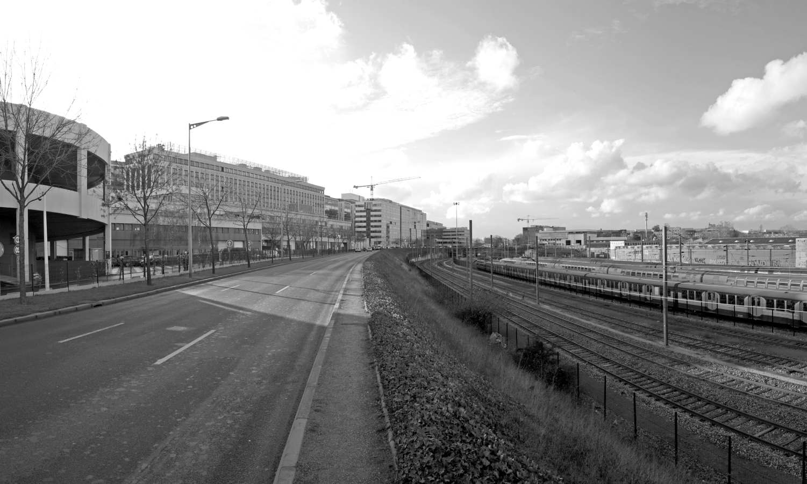

Survolez l'image et agrandissez/réduisez la vue à l'aide de la molette.
Budget: -
Surface: -
Date début: 2010
Date fin: 2010
Maîtrise d'ouvrage: EPASA (Etablissement Public de Seine Arche)
Co-traitant(s): Bureau des paysages
Description:
Le faisceau est un réseau d’infrastructures qui a façonné le paysage urbain de la ville de Nanterre, dans
la périphérie de l’ouest parisien. Après avoir desservi la ville, nous pensons qu’il peut désormais la servir.
Le faisceau est non seulement une partie de la ville, c’est un état de ce territoire, celui de communes
marquées par les emprises d’infrastructures qui s’étendent bien au-delà des limites du projet qui ont été
fixées par la maîtrise d’usage. La méthode adoptée, à la fois attentive et ouverte, considère les possibilités
offertes par ce territoire d’une manière positive, sans a priori.
Nous proposons de prendre appui sur la
structure urbaine existante, celle des infrastructures et des espaces publics, ainsi que sur les emprises
de terrains disponibles, pour inviter à Nanterre de nouvelles formes urbaines. Comment rendre possible
la juxtaposition d’histoires et de formes construites dissemblables, de lieux différents qui aujourd’hui
cohabitent sans se regarder et parfois sans être vraiment considérés ?
La ville peut être transformée à
partir de ce qu’elle est, en se servant de la diversité des lieux et des constructions qui s’y trouvent pour
édifier avec tous et sans attendre, en cinq ans, une ville originale qui sera riche de ses différences.
Nous imaginons une manière de cultiver, d’amender, de mettre en valeur des lieux souvent ingrats
et peu avenants pour qu’ils deviennent rapidement agréables et vivants. À partir d’une première série
de travaux, ces territoires pourraient prendre le chemin de la ville pour connaître, au fil du temps,
un développement harmonieux.
{kind=link}
{kind=link}
{kind=link}
{kind=link}